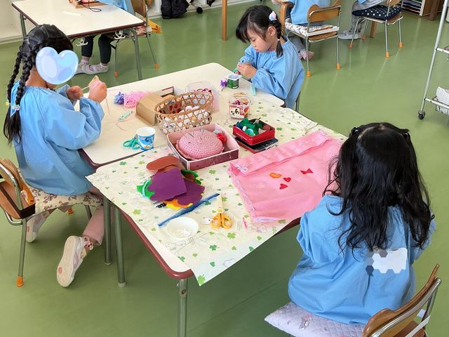
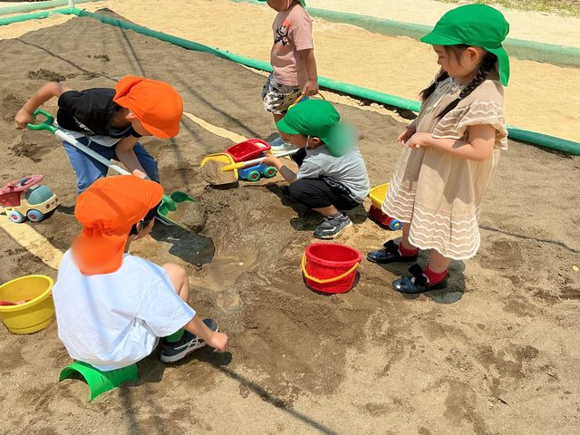
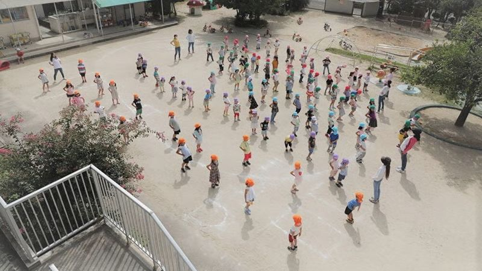
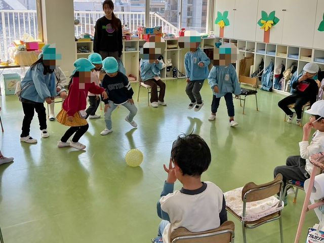
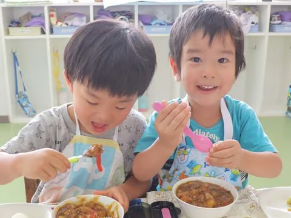
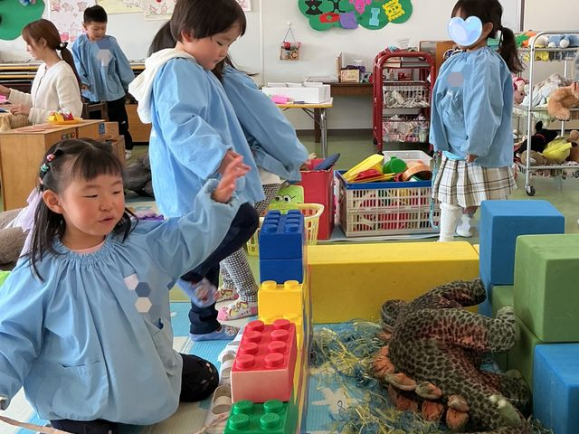

8:45〜9:00
登園
身支度
登園から降園まで、こんな一日を過ごしています
8:45〜9:00に登園して、14:00に降園します。そのあとは、希望する方のみ預かり保育があります。
身支度



広い園庭に集まって、週に2回全員で同じ体操をします。現在は火曜日と木曜日に行っています。
室内ゲーム／リズム遊び／制作活動／絵画活動など




〒464-0032 名古屋市千種区猫洞通2丁目13番地
見学は随時受け付けています。